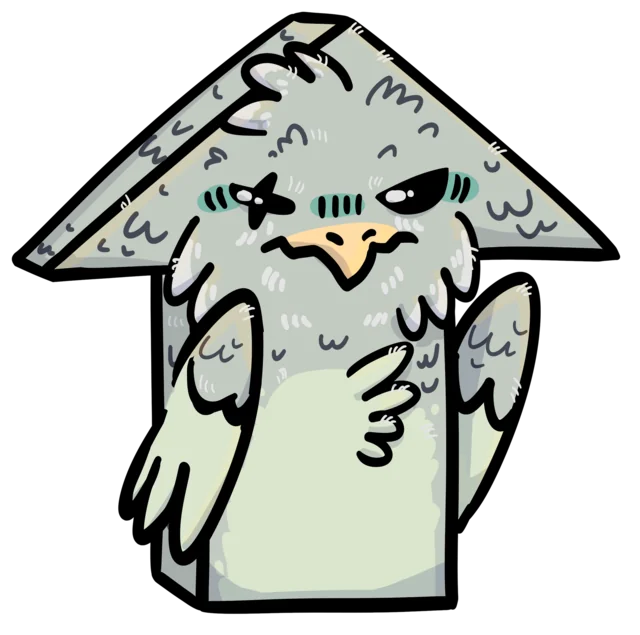
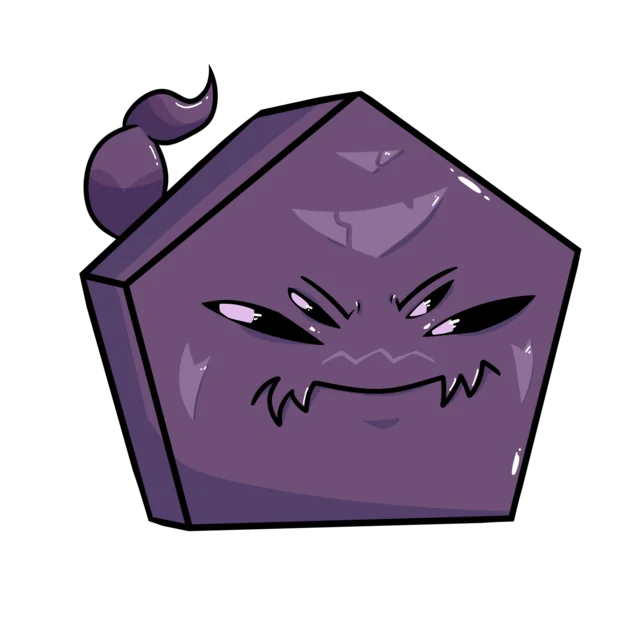

Ball is God?! أدِر البرج. كن أنت الارتطام.
أركيد نزول عمودي للمحترفين، يدوّر فيه السحب الأفقي البرج حول Espa الساقط. تخطَّ الهبوط الآمن، واشحن ضربة كومبو، واخترق عالمًا أسطوريًا تُنهي فيه ضربة واحدة غير محمية الجولة.
الإنتاج النشط: عشرة مشاهد للمواقع، وزعماء، وحوارات متفرعة، ومسارات كارما تغيّر قواعد اللعب.
تدويراسحب البرج حول Espa
خطرتخطي ثلاث عمليات هبوط آمنة
ضربةاختراق المنصة
داخل الإصدار الحالي
تُغيّر الكارما أكثر من مجرد الحوار.
تغيّر مسارات الكارما المضيئة والمحايدة والمظلمة سلوك الدرع وإشارات التحذير وعدوانية الأعداء ومراحل الزعماء، فتغيّر القصة طريقة لعبك.
حالة النسخة الإنتاج النشطعوالم الحوار العشرة كلها
خلفيات الحوار للعوالم العشرة جميعها، بترتيب النزول من Ena إلى Deka.


واجهة المستخدم الحالية للإنتاج
شاشات اختيار المستوى والحوار والنتيجة في الإصدار الحالي.
هذا هو التدفق الحالي بالترتيب الذي تصادفه: اختيار المستوى، ثم الحوار، ثم اختيار محوري، ثم الفوز أو شاشة هزيمة منفصلة. كل صورة أدناه تستخدم فنًا من مشروع Unity الخاص بالإنتاج.
يتيح المسار السماوي اختيار المستويات المولّدة عبر عشرة فصول يضم كل منها 100 مستوى.
توزّع قائمة الإنتاج عشرة مواقع في فصول من 100 مستوى، وتفتح مباشرةً على الجولة المحددة.

 201
201يدور الحوار داخل الموقع نفسه.
صورة الشخصية وفن الموقع ولوحة المتحدث تتشارك إطارًا عموديًا واحدًا.


Shash
تابع إذن، لكن لا تعتقد أن الأمر سيكون سهلاً. Tria في انتظارك مما سيجعل كل شيء سابقًا يبدو وكأنه مجرد تافه.
04 / اختيار المحطة الرئيسية
يصبح الجواب جزءًا من النزول.
عند المستويين المحليين 90 و100، تطلب اللوحة المخصّصة قرار الرحمة أو القتل قبل أن يحسم الحوار الجولة.

ارحم
اقتل
05 / قوائم النتائج
الفوز يواصل التقدم. الخسارة تعيدك إلى التحدي نفسه.
يحتوي الإصدار الحالي على حالتي نتيجة منفصلتين: يوفّر PanelWin إعادة اللعب والمستوى التالي، بينما يحتفظ PanelOver بإجراء إعادة لعب واحد واضح لا لبس فيه.
النصر · PanelWin
اكتمل النزول
 إعادة اللعب
التالي
إعادة اللعب
التالي
إعادة اللعب
التالي
شخصيات الحوار
وجوه تقابلها في طريق النزول.
جميع الشخصيات الـ25 التي تمتلك أزواج صور إنتاجية صالحة (مفتوحة ومغلقة) مُدرجة أدناه. مرّر المؤشر فوق البطاقة أو ركّز عليها لتبديل التعبير.








نظرة عامة على اللعبة
Ball is God?! لعبة أركيد للمحترفين عن السقوط عبر برج دوّار.
الفكرة
قُد Espa نزولًا عبر برج إلهي. قد ينهي خطأ واحد الجولة، وخياراتك الكبرى تغيّر طريقة لعب العالم.
الإصدار الحالي
تم تنفيذ عشرة مشاهد للمواقع، والتوليد الإجرائي للأبراج، وضربة الكومبو، ودرع السحب، وإعدادات الزعماء، والحوار المتفرّع، وقوائم الإنتاج، وصور الشخصيات الجاهزة لتغيير التعابير.
الجمهور
لاعبون يحبون ألعاب الأركيد الصعبة على الهاتف المحمول، وتوقيت المخاطرة والمكافأة، والزعماء، مع قصة تُتابَع.
الحالة
الإنتاج النشط. شمل العمل الأخير أنظمة وقت التشغيل وفن العوالم والاختبار وطريقة اللعب على الهاتف.
المميزات
ماذا تفعل في Ball is God?!
نزول بالسحب للتدوير
يدوّر السحب الأفقي البرج حول Espa أثناء سقوطه التلقائي، ليُحاذي الفجوات والمخاطر والمنصات الآمنة.
ضغط أركيد للمحترفين
ضربة واحدة غير محمية تنهي الجولة، لذا عليك قراءة البرج وضبط توقيت كل حركة.
الزعماء والعوالم الأسطورية
عشرة مشاهد للمواقع، لكل منها زعماؤه، تنقل القصة من عالم إلى آخر.
خيارات تغيّر القواعد
تُغيّر الرحمة والقوة والكارما الحوار، وقواعد الدرع، وعدوانية الأعداء، وإشارات التحذير، ومراحل الزعماء.
حلقة اللعب
طريقة لعب Ball is God?!
- الخطوة 01اقرأ النزول
امسح بعينيك المنصات والفجوات والأخطار التالية، وابحث عن نوافذ توقيت آمنة أثناء السقوط.
- الخطوة 02أدِر البرج
يدوّر السحب الأفقي العالم حول Espa لمحاذاة منصة آمنة أو فجوة مقصودة.
- الخطوة 03مخاطرة وضربة
تخطَّ ثلاث منصات لشحن ضربة كومبو، ثم اخترق الهياكل بينما يغطّي الدرع خطأً قاتلًا واحدًا.
- الخطوة 04اختر العاقبة
تشكّل الرحمة والقوة الكارما والحوار وقواعد اللعب التي تنعكس على الأعداء والزعماء.
قصة / عالم
برج أسطوري تلاحقك فيه خياراتك أثناء النزول.
بدأت Ball is God?! من شغف الطفولة بألعاب الأركيد ذات النزول العمودي على الجوال: قراءة الفجوات، وسرعة ردّ الفعل، والنجاة بالغريزة.
كان بإمكان هذا الشكل أن يحمل أكثر: زعماء، وشخصيات ذات طابع، وقصة، وتوترًا أخلاقيًا. ويتتبع المشروع الحالي Espa عبر عشرة مشاهد للمواقع وطاقم من الشخصيات الغريبة، مع خيارات تغيّر القصة واللعب معًا.
فأصبح الهدف أركيد نزول عمودي بسيطًا بضغط معركة الزعيم وعواقب لعبة تقمّص أدوار تقودها القصة.
- رؤية
- أركيد ببرج دوّار وقصة أسطورية
- نطاق العالم الحالي
- عشرة مواقع وإعدادات الزعماء
- مرحلة القصة
- مسودة كاملة للقصة الطويلة
- حالة الإنتاج
- الإنتاج النشط
نظرة سريعة
عناصر تحكم بسيطة بالسحب، وقصة تغيّر القواعد.
عناصر التحكم بالسحب للتدوير فورية. أما الباقي فيأتي من العوالم الأسطورية والزعماء والخيارات التي تغيّر اللعب.
يجمع الإصدار الحالي بالفعل بين توليد البرج الحتمي، والتحطيم القائم على المخاطرة والمكافأة، والفشل بضربة واحدة، والزعماء، والحوار المتفرع، وكارما تغيّر اللعب.
- النوع
- أركيد نزول عمودي تقوده القصة
- هدف المنصة
- iOS / Android
- شكل الجلسة
- جولات سريعة تعتمد على المهارات
- استوديو
- WillowinWorlds
تحميل المواد
مواد الصحافة وصنّاع المحتوى للعبة Ball is God?!
معاينات WebP للتغطية الصحفية ومراجعة الناشرين ومراجع صفحات المتاجر. ملفات المصدر بدقتها الكاملة متاحة عند الطلب.
العلامة التجارية والشخصيات
أيقونة اللعبة إلى جانب الشخصيات الـ25 الحالية جميعها التي تمتلك صورًا حوارية إنتاجية كاملة. وتطابق الأسماء مفاتيح الترجمة في Unity.
Espaصورة شخصية اللاعب.
Revlaبورتريه حوار الإنتاج.
Shashبورتريه حوار الإنتاج.
Shushبورتريه حوار الإنتاج.
Shishبورتريه حوار الإنتاج.
Gigoبورتريه حوار الإنتاج.
Gogaبورتريه حوار الإنتاج.
Gigaبورتريه حوار الإنتاج.
Askoldبورتريه حوار الإنتاج.
Mirasبورتريه حوار الإنتاج.
Hihبورتريه حوار الإنتاج.
Hehبورتريه حوار الإنتاج.
Hahبورتريه حوار الإنتاج.
Musyaبورتريه حوار الإنتاج.
Dusyaبورتريه حوار الإنتاج.
Susyaبورتريه حوار الإنتاج.
Vladusبورتريه حوار الإنتاج.
Frishaبورتريه حوار الإنتاج.
Lurenبورتريه حوار الإنتاج.
Kurenبورتريه حوار الإنتاج.
Don Yagonبورتريه حوار الإنتاج.
Luryaبورتريه حوار الإنتاج.
Khleyaبورتريه حوار الإنتاج.
Varonبورتريه حوار الإنتاج.
Whiteبورتريه حوار الإنتاج.
خلفيات القائمة
العمل الفني الإنتاجي الحالي الذي يستخدمه نظام اختيار المستوى السماوي.
 القائمة السماوية
القائمة السماويةعوالم النزول العمودي
المجموعة الكاملة لخلفيات المواقع العشرة الحالية، مرتبةً من Ena إلى Deka.
 01 · عالم السماءخلفية النزول العمودي في Ena.
01 · عالم السماءخلفية النزول العمودي في Ena.
 02 · عالم الفضاءخلفية النزول العمودي في Dyo.
02 · عالم الفضاءخلفية النزول العمودي في Dyo.
 03 · عالم العاصفةخلفية النزول العمودي في Tria.
03 · عالم العاصفةخلفية النزول العمودي في Tria.
 04 · عالم الثلجخلفية النزول العمودي في Tessera.
04 · عالم الثلجخلفية النزول العمودي في Tessera.
 05 · عالم البركانخلفية Pente؛ متحركة داخل اللعبة.
05 · عالم البركانخلفية Pente؛ متحركة داخل اللعبة.
 06 · عالم المحيطاتخلفية النزول العمودي في Eksi.
06 · عالم المحيطاتخلفية النزول العمودي في Eksi.
 07 · عالم الصحراءخلفية النزول العمودي في Epta.
07 · عالم الصحراءخلفية النزول العمودي في Epta.
 08 · عالم الغاباتخلفية النزول العمودي في Ohto.
08 · عالم الغاباتخلفية النزول العمودي في Ohto.
 09 · عالم الكهفخلفية النزول العمودي في Ennea.
09 · عالم الكهفخلفية النزول العمودي في Ennea.
 10 · عالم الجحيمخلفية النزول العمودي في Deka.
10 · عالم الجحيمخلفية النزول العمودي في Deka.
خلفيات أركيد القصة
المجموعة الكاملة لمواقع الحوار: قاعة النور إلى جانب خلفيات العوالم العشرة جميعها.
 00 · قاعة النورخلفية حوار الافتتاح.
00 · قاعة النورخلفية حوار الافتتاح.
 01 · حوار السماءخلفية قصة Ena.
01 · حوار السماءخلفية قصة Ena.
 02 · حوار الفضاءخلفية قصة Dyo.
02 · حوار الفضاءخلفية قصة Dyo.
 03 · حوار العاصفةخلفية قصة Tria.
03 · حوار العاصفةخلفية قصة Tria.
 04 · حوار الثلجخلفية قصة Tessera.
04 · حوار الثلجخلفية قصة Tessera.
 05 · حوار البركانخلفية قصة Pente.
05 · حوار البركانخلفية قصة Pente.
 06 · حوار المحيطخلفية قصة Eksi.
06 · حوار المحيطخلفية قصة Eksi.
 07 · حوار الصحراءخلفية قصة Epta.
07 · حوار الصحراءخلفية قصة Epta.
 08 · حوار الغابةخلفية قصة Ohto.
08 · حوار الغابةخلفية قصة Ohto.
 09 · حوار الكهفخلفية قصة Ennea.
09 · حوار الكهفخلفية قصة Ennea.
 10 · حوار الجحيمخلفية قصة Deka.
10 · حوار الجحيمخلفية قصة Deka.
الأسئلة الشائعة حول Ball is God?!
أسئلة شائعة حول Ball is God?!
ما نوع لعبة Ball is God?!
أركيد نزول عمودي للمحترفين. تدير برجًا حول Espa الساقط، وتتخطى الهبوط الآمن لتشحن الضربات، وتشق طريقك عبر عوالم أسطورية.
كيف تلعب Ball is God?!
اسحب أفقيًا لتدوير البرج، وتخطَّ ثلاث منصات لشحن ضربة ساحقة، واسحب عموديًا عندما يتعيّن على درع التبريد امتصاص ضربة قاتلة.
هل صدرت Ball is God?! بعد؟
ليس بعد. إنها قيد الإنتاج النشط عبر أنظمة وقت التشغيل وفن العوالم ومحتوى القصة والاختبار. لا يوجد موعد إصدار عام. المنصتان المستهدفتان هما iOS وAndroid.
ما الذي يميّز Ball is God?! عن غيرها؟
تمزج بين ضغط الأركيد القائم على المخاطرة والمكافأة وعشرة مواقع وكارما تغيّر الحوار والأعداء وإشارات التحذير والدروع والزعماء.
من يصنع Ball is God?!
WillowinWorlds، استوديو مستقل يصنع ألعاب ألغاز وأركيد للهاتف المحمول.
هل يمكنني استخدام مواد Ball is God?! الصحفية؟
نعم، للصحافة ومراجعة الناشرين ومراجع المتاجر. تبقى الملفات المصدرية خاصة ما لم تطلبها منا.
مدونة تطوير Ball is God?!
ماذا تغير ومتى
- أسطح العالم والتحقق من المخاطر
خضع عرض الشخصيات والتوليد الحتمي وأخطار الأشواك لمراجعة بصرية وتحقق مشتركة.
- يوليو 2026مراجعة واجهة الإنتاج والشخصيات
أصبحت الآن جاهزة: شاشة اختيار المستوى، وأزرار الإجراءات المشتركة، وتأطير الحوار العمودي، وتعابير الشخصيات المزدوجة.
- فبراير 2026مراجعة نطاق المشروع
أكمل الفريق مراجعة كبرى لدمج القصة واستعرض النطاق الكامل للمشروع: عشرة عوالم، وخيارات أخلاقية، وزعماء، ونهايات متعددة.
- أبريل-مايو 2025إعادة كتابة القصة والقدرات
أُعيدت كتابة القصة كاملةً، وحُسّنت قدرات الشخصيات، وأصبحت العواقب الأخلاقية أكثر وضوحًا.
- أغسطس 2024يبدأ اتجاه القصة
قرّر الفريق أن تكون Ball is God?! أكثر من مجرد أركيد نزول بسيط، وأضاف قصة أسطورية ورؤية للخيارات الأخلاقية.
- يوليو 2024المفهوم الأصلي
بدأ المشروع كأول فكرة لعبة للاستوديو: لعبة أركيد عمودية سريعة عن السقوط عبر برج إلهي.
- الإصدار الحاليالأركيد والقصة في إصدار واحد
يعمل الآن معًا في إصدار واحد: النزول عبر البرج الدوّار، وضربة الكومبو، ودرع السحب، والزعماء، والحوار، والكارما.